Voronoi treemaps
An API proposal for #1222, with an explanation of how treemap tilings work. today marks a render of the current API. prototype marks a real GoFish render of polygons that a throwaway layout script computed.
-
A Voronoi treemap is
treemapwith a new tiling,Tile.voronoi. One flow step is one level, as it already is for every tiling. -
Leaves draw with
region(), the mark that already fills a partition cell. It now also fills a treemap cell. -
Gaps use treemap's existing
spacing(between siblings) andpadding(at its outer edge). -
A round boundary comes from an
enclose({ shape: Shape.oval })step above the treemap. Around a child that fills its space, enclose hands its shape down. - Inside the library, a parent can hand its child a convex polygon instead of a box. A rectangular tiling inside a polygon cell is a loud error.
-
Tile.sliceDiceis deleted. It draws exactly likeTile.dicetoday, and two flow steps express slice-and-dice.
Voronoi treemap in a circle prototype
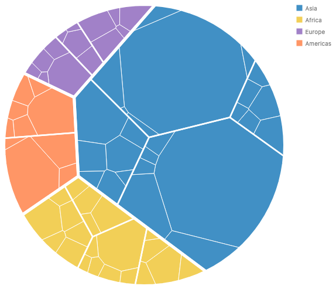
Proposed
chart(countryPopulations)
.flow(
enclose({ shape: Shape.oval, fill: "none" }),
treemap({ by: "continent", size: "pop", spacing: 5, tile: Tile.voronoi }),
treemap({ by: "region", size: "pop", spacing: 2.5, tile: Tile.voronoi }),
treemap({ size: "pop", spacing: 1, tile: Tile.voronoi })
)
.mark(region({ fill: "continent" }));chart(COUNTRY_POPULATIONS).flow(
enclose(shape=Shape.oval, fill="none"),
treemap(by="continent", size="pop", spacing=5, tile=Tile.voronoi(seed=7)),
treemap(by="region", size="pop", spacing=2.5, tile=Tile.voronoi),
treemap(size="pop", spacing=1, tile=Tile.voronoi),
).mark(region(fill="continent"))Current
No spelling. The closest is a nested squarify treemap in a rectangle (next card).
Voronoi treemap in the chart's box prototype
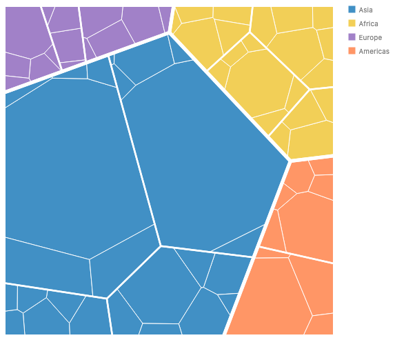
Proposed
chart(countryPopulations)
.flow(
treemap({ by: "continent", size: "pop", spacing: 5, tile: Tile.voronoi }),
treemap({ by: "region", size: "pop", spacing: 2.5, tile: Tile.voronoi }),
treemap({ size: "pop", spacing: 1, tile: Tile.voronoi })
)
.mark(region({ fill: "continent" }));Current, nested squarify today
chart(countryPopulations)
.flow(
treemap({ by: "continent", size: "pop", spacing: 6 }),
treemap({ by: "region", size: "pop", spacing: 3 }),
treemap({ size: "pop", spacing: 1 })
)
.mark(rect({ fill: "continent" }));Show today's render
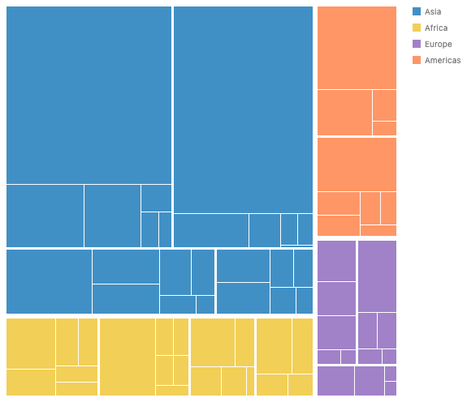
Squarify continents, Voronoi below prototype
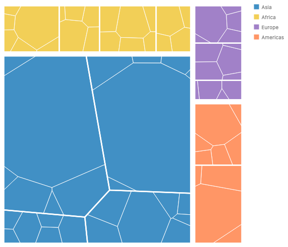
A rectangle is convex, so a Voronoi level fits inside any rectangular tiling.
Proposed
chart(countryPopulations)
.flow(
treemap({ by: "continent", size: "pop", spacing: 8 }),
treemap({ by: "region", size: "pop", spacing: 2.5, tile: Tile.voronoi }),
treemap({ size: "pop", spacing: 1, tile: Tile.voronoi })
)
.mark(region({ fill: "continent" }));Current
No spelling. Only rectangular tilings exist.
Slice, then dice today
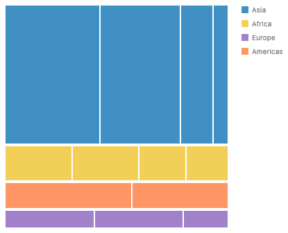
Slice-and-dice alternates direction by level. Two flow steps
already say that, so Tile.sliceDice goes.
Proposed (works today)
chart(countryPopulations, { w: 320, h: 320 })
.flow(
treemap({ by: "continent", size: "pop", spacing: 4, tile: Tile.slice }),
treemap({ by: "region", size: "pop", spacing: 2, tile: Tile.dice })
)
.mark(rect({ fill: "continent" }));Current, removed
treemap({ by: "region", size: "pop", tile: Tile.sliceDice });
// draws exactly like Tile.dice, because every GoFish treemap is depth 0Error: squarify inside a Voronoi cell no render
Squarify assumes a rectangle. Using the cell's bounding box would break the areas, so this is an error that names the fix. A later polygon tiling, e.g., angular treemaps, could fill the gap.
Proposed
chart(countryPopulations)
.flow(
treemap({ by: "continent", size: "pop", tile: Tile.voronoi }),
treemap({ by: "region", size: "pop", tile: Tile.squarify })
)
.mark(region({ fill: "continent" }));
// Error: treemap (by "region"): Tile.squarify needs a rectangular region,
// but this treemap sits in a Voronoi cell. Use Tile.voronoi here.Hard example: a bubble treemap in each Voronoi cell prototype
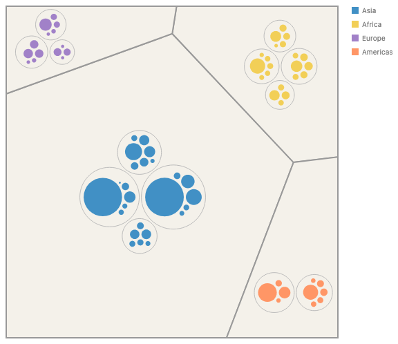
This mixes top-down and bottom-up layout. The prototype uses one circle scale, set by the thinnest cell (Europe), so the packs look small in big cells. The spelling works, and the picture needs pack fitting (#967). Region contours here are plain circles.
Proposed
chart(countryPopulations)
.flow(
treemap({ by: "continent", size: "pop", tile: Tile.voronoi }),
pack({ by: "region", spacing: 4 }),
enclose({ shape: Shape.arcs({ radius: 8 }), padding: 4, fill: "none" }),
pack()
)
.mark(country);Current, bubble treemap today
Show code and render
chart(countryPopulations)
.flow(
pack({ by: "continent", spacing: 4 }),
enclose({
shape: Shape.arcs({ radius: 12 }),
padding: 4,
fill: "none",
stroke: "#333",
}),
pack({ by: "region", spacing: 4 }),
enclose({ shape: Shape.arcs({ radius: 8 }), padding: 4, fill: "none" }),
pack()
)
.mark(country);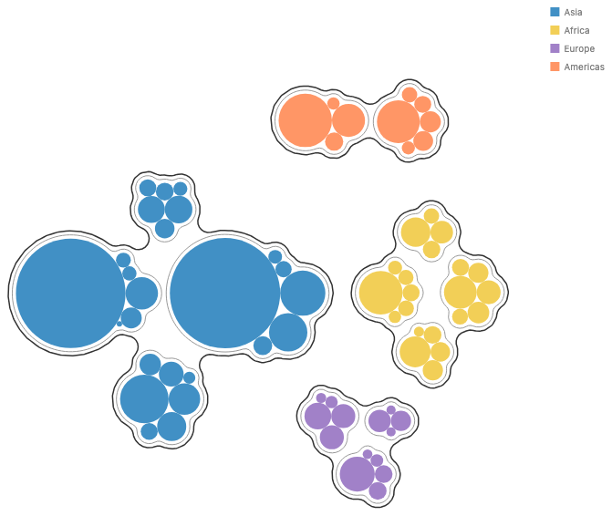
Hard example: Voronoi treemaps in hex bins no render
A hex cell is convex. Once partition cells are handed down as regions (the nested-partition gap in #1059), this needs nothing new.
Proposed
chart(sightings)
.flow(
partition({
by: struct({ x: "lon", y: "lat" }).bin(Bin.hex({ radius: 1 })),
}),
treemap({ by: "species", size: "count", tile: Tile.voronoi })
)
.mark(region({ fill: "species" }));Current
No spelling. A child of a hex cell gets only the cell's bounding box.
A drawn outline per group no render
For a colored group outline, as in the bubble treemap, add an
enclose step. A group's cells together make its
parent cell, so the outline is that cell. This needs cells to
report outlines (#1233), which pack already does.
Proposed
chart(countryPopulations)
.flow(
treemap({ by: "continent", size: "pop", spacing: 6, tile: Tile.voronoi }),
enclose({
shape: Shape.box,
fill: "none",
stroke: "#333",
strokeWidth: 1.5,
}),
treemap({ by: "region", size: "pop", spacing: 3, tile: Tile.voronoi }),
treemap({ size: "pop", spacing: 1, tile: Tile.voronoi })
)
.mark(region({ fill: "continent" }));Current
No spelling for Voronoi. For rect treemaps, outlines come from
spacing gaps only.
The same data under each tiling
Thirteen regions, area proportional to population. Only the last panel is new.
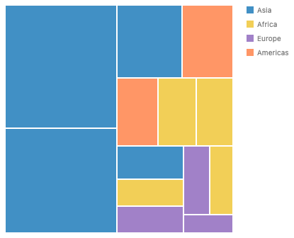
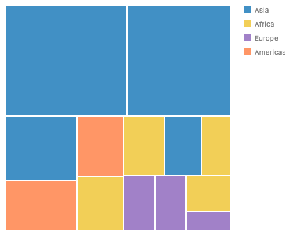
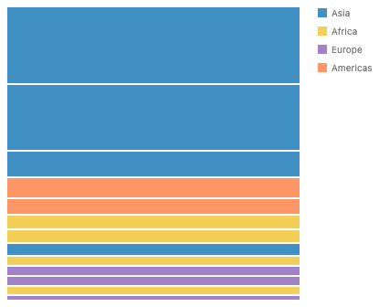
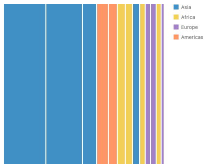

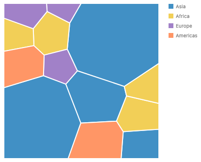
chart(countryPopulations, { w: 320, h: 320 })
.flow(treemap({ by: "region", size: "pop", spacing: 2, tile: Tile.voronoi }))
.mark(region({ fill: "continent" }));Decisions for you
-
Is
Tile.voronoiontreemapthe right home, rather than a separatevoronoioperator? -
Should the leaf mark be
region(), the partition cell mark, rather than a new mark or a stretchedrect? - Is a rectangular tiling inside a polygon cell a loud error, rather than a fallback to the bounding box?
-
Should
enclose({ shape })around a filling child hand its shape down, for a round boundary? The alternative is d3'sTile.voronoi({ clip: Shape.oval }). -
Should
Tile.voronoitake onlyseed, with tolerance and iteration cap fixed inside? d3 exposesconvergenceRatio,maxIterationCountandminWeightRatio. - Can we delete
Tile.sliceDice? -
In a polygon cell, should
Shape.boxmean the cell, or do we addShape.cell?
Every tiling works on one level
A tiling cuts one region into one piece per child, with each piece's area proportional to the child's value. All the common tilings take the same two inputs: one node's child values, and the region that node got. None of them look at the levels above or below.
In d3, treemap(root) calls
tile(node, x0, y0, x1, y1) once per internal node, from
the top down. Bruls et al. chose this on purpose in the squarify
paper: "we do not consider the subdivision for all levels
simultaneously. This leads to an explosion in computation time."
| Tiling | How it works | Order kept | Shapes |
|---|---|---|---|
Tile.slice |
Cuts the rectangle into horizontal strips, one per child, top to bottom. | yes | thin strips |
Tile.dice |
The same with vertical strips, left to right. | yes | thin strips |
Tile.squarify |
Sorts children largest first. Fills a row along the short side and keeps adding children while the worst aspect ratio in the row improves. When it gets worse, it closes the row and starts a new one in the leftover space. (Bruls, Huizing, van Wijk 2000) | no | close to square |
Tile.binary |
Splits the children into two halves of about equal value. It cuts a wide rectangle left and right and a tall one top and bottom, then recurses. (d3) | partly | balanced |
| strip, pivot, split, spiral | Not in GoFish. Strip fills rows in input order. Pivot picks one child and arranges the rest around it, then recurses. (Bederson, Shneiderman, Wattenberg 2002; Engdahl 2005) | yes | medium |
Tile.voronoi (new) |
Places one site per child and grows a power diagram until each cell has its target area. (Balzer and Deussen 2005; Nocaj and Brandes 2012) | no | rounded polygons |
Slice and dice within a level and across levels
Slice and dice are each a single-level tiling. The classic
slice-and-dice treemap (Shneiderman 1992) is the two of them
alternating by depth: level one slices, level two dices, and so on.
d3's treemapSliceDice is only a switch on
node.depth.
In GoFish each level is its own flow step, so you write the alternation directly, one tiling per step. This also answers whether each level of a bubble treemap could be its own treemap. Yes, every level picks its own layout, and the only limits are about shape and size direction, covered below.
Is a treemap a dynamic program, like the pretty printer?
No. Squarify, strip, pivot, split and binary are all greedy or divide-and-conquer rules, and the squarify paper says it cannot guarantee the best result. Finding the treemap with the best aspect ratios is strongly NP-hard even for one level (de Berg, Speckmann, van der Weele 2011, Theorem 11). We found no published treemap layout that uses dynamic programming.
- A Wadler-style pretty printer picks line breaks greedily, as squarify picks rows greedily.
- An optimal printer (Bernardy 2017; Porncharoenwase et al. 2023) can be exact because its state is small, a column position below the page width, and its cost adds up line by line.
- A treemap's leftover region is a 2D shape that depends on every earlier choice, and the worst aspect ratio does not add up. So the same method does not apply.
- One case does fit. A strip layout with a fixed order and fixed strip direction is the same problem as breaking a paragraph into lines (Knuth and Plass), and a dynamic program over break points finds the best strips. This is our own observation, and no system we surveyed ships it.
A Voronoi treemap is a third kind. It is an iterative search that settles into a local optimum.
How a Voronoi treemap is built
A power diagram is a Voronoi diagram where each site has a weight, and a bigger weight gives a bigger cell. Its cells have straight edges and are always convex. One level, inside a convex region:
- Place one site per child, from a seeded random number generator so the result is repeatable.
- Give every site the same small weight and compute the power diagram, clipped to the region.
- Move each site to the center of its cell. This keeps cells round.
- Compare each cell's area to its target, which is the region's area times the child's share. Grow the weight of a cell that is too small and shrink one that is too large. Keep each weight small enough that the site stays inside its own cell.
- Repeat steps 3 and 4 until the total area error is below a tolerance, e.g., 1%, or an iteration cap is reached.
Every cell of a clipped power diagram is convex, so each cell can be the region for the next level, and that is why the method nests. The prototype reaches a worst-cell error of 2% to 3% in 13 to 42 ms for 70 countries in three levels.
d3-weighted-voronoi computes one power diagram.
d3-voronoi-map runs the loop for one level.
d3-voronoi-treemap repeats
d3-voronoi-map inside each cell.
What GoFish's treemap can and cannot compose today
Each treemap in .flow() already lays out one
level over its own box (treemap.tsx:215), and each step
can use a different tiling. The bubble treemap has the same shape,
with pack in place of treemap. Three things
still keep treemap from composing freely.
- The region is always a box. Layout hands a child only a width and a height, and a Voronoi level needs its parent's polygon. The same gap blocks nested partitions (#1059) and a circle pack inside each hex bin (#1064). The proposal fixes this one.
- Top-down and bottom-up do not meet. A treemap fills the region it is given, and a pack keeps its children at their own size. In a pack of treemaps there is no way to say that each treemap's area follows its total, so every continent below is the same size. That needs an area request with a free aspect ratio (#967, #972), and it is out of scope.
-
Group padding lives on the treemap. Treemap has
spacingandpadding, while bubble treemaps put the gap on anenclosestep. The proposal keeps treemap's keys. Movingpaddingtoenclosewould give one word two directions, outward in a pack and inward in a treemap.
A pack of treemaps today
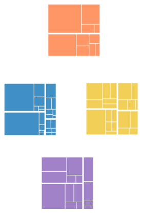
Every continent is 100 × 100 because the size has to be a literal.
chart(countryPopulations)
.flow(
pack({ by: "continent", spacing: 8 }),
treemap({ by: "region", size: "pop", spacing: 3, w: 100, h: 100 }),
treemap({ size: "pop", spacing: 1 })
)
.mark(rect({ fill: "continent" }));Why this design
- It desugars into the existing core. It adds one strategy and lets a layout region be a convex polygon. The polygon region also closes the nested-partition gap in #1059 and unblocks #1064. The mechanism stays fixed and the long tail grows as strategies ("Why keep the core small", principles.md).
- One concept is one operator. Every surveyed library treats Voronoi as a tiling choice or a package on top of the same hierarchy code.
-
Few new terms.
Tile.voronoiandseed.region()andenclosegain cases their names already suggest. -
It matches recent decisions. Uppercase strategy
families with bare kinds as values (#1013, #1145).
spacingas the sibling gap andpaddingas the outer inset (#1005).seedas innoise. - It errors loudly. A rectangular tiling in a polygon cell names the fix instead of drawing wrong areas.
-
The same shape in Python.
tile=Tile.voronoi(seed=7)comes from the generatedTilemodule.
Alternatives considered
B: a separate voronoi operator
This mirrors d3's package split. It has the same inputs, outputs
and options as treemap, which is the large partial
overlap that api-design.md warns against ("Overlap is fine at the
edges, not in the middle"). Squarify and Voronoi levels would also
look like two operators when they are two tilings of one idea.
chart(countryPopulations)
.flow(
voronoi({ by: "continent", size: "pop", spacing: 5 }),
voronoi({ by: "region", size: "pop", spacing: 2.5 }),
voronoi({ size: "pop", spacing: 1 })
)
.mark(region({ fill: "continent" }));C: a weighted Voronoi partition
Adding weights to today's Bin.voronoi({ seeds }) is a
useful feature, but it is not a treemap. A partition decides cells
from where the data sits, and a treemap decides cells from how
much each group holds. A treemap of continents has no seed
positions to give. The two features should share one clipping
routine (geometry/clip.ts already has
clipToConvex and insetConvex) and keep
separate names.
A clip option instead of enclose for the
boundary
treemap({
by: "continent",
size: "pop",
tile: Tile.voronoi({ clip: Shape.oval }),
});
This is d3's spelling and simpler to build, but only Voronoi gets
a circle. A pack in a circle or a Voronoi treemap in a hexagon
would each need their own clip option. This is the runner-up. We
would pick it if a filling mode for enclose turns out
to be too much for one change. Inner levels need polygon regions
either way.
Moving treemap's padding onto enclose
This would copy the bubble treemap exactly. In a pack, enclose padding grows the group outward. In a treemap the same number would have to shrink the region inward, and one word with two directions is a trap.
How it composes and what it overlaps
-
Who makes polygon regions. Treemap cells of any
tiling, partition cells (
Bin.hex,Bin.voronoi), andenclosewith a convex shape. -
Who reads them.
treemap,region(), and laterpack, which could fit inside a polygon. -
Enclose's two modes. Around content with its
own size, enclose hugs it. Around content that fills its space,
the content fills enclose's shape. Only convex shapes work in
the second mode, so
Shape.boxandShape.ovalare allowed andShape.arcsorShape.blobis an error. -
Coordinate transforms. In
Coord.polarthe straight edges bend, as a rect treemap's do today. No special case. - Animation. A seeded start gives the same picture on every render. Stable layouts across data changes (Hahn et al. 2014) could be a later option on the strategy.
-
Overlap with
Bin.voronoi. A small shared case: both clip a power diagram to a convex region. Membership comes from position in one and from groups in the other. -
Overlap with
pack. None. Pack is bottom-up, treemap is top-down. - Custom tilings (#1101). A custom tiling would receive a region, box or polygon, and return one region per child. That is d3's tile signature with a polygon in place of four numbers.
Precedent
d3-voronoi-treemap (Lebeau)
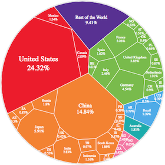
d3.voronoiTreemap()
.clip(circlePolygon)
.convergenceRatio(0.01)
.maxIterationCount(50)
.minWeightRatio(0.01)
.prng(seededRandom)(root);Recursive over a d3 hierarchy. The outer boundary is a convex clip. Repeatable only with a seeded prng. Image from github.com/Kcnarf/d3-voronoi-treemap.
WeightedTreemaps (R)
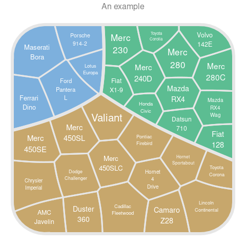
voronoiTreemap(data,
levels = c("gear", "car_name"),
cell_size = "wt",
shape = "rounded_rect",
seed = 123)Recursive Voronoi. Custom shapes are not checked. Only the starting positions vary per level. Image from github.com/m-jahn/WeightedTreemaps.
d3-hierarchy
d3.treemap()
.tile(d3.treemapSquarify.ratio(1))
.paddingInner(2)(root);
One tile function, called once per node. A custom tile can
switch on node.depth, which is all
treemapSliceDice does.
Highcharts
{
type: "treemap",
layoutAlgorithm: "squarified",
levels: [{ level: 1, layoutAlgorithm: "sliceAndDice" }],
}The only surveyed system with a tiling per level as an option. GoFish gets this from flow steps.
Vega and Plotly
{ type: "treemap", method: "squarify", ratio: 1.618 }
{ tiling: { packing: "squarify", squarifyratio: 1 } }One method for the whole tree. No Voronoi.
FoamTree, treemapify, Vega-Lite, Plot
FoamTree: layout: "relaxed" (Voronoi)
treemapify: geom_treemap(layout = "squarified")
Vega-Lite, Observable Plot: no treemapFoamTree has Voronoi as one global setting. Vega-Lite and Plot users compute layouts in d3 and draw rects.
Cleanups found along the way
-
Tile.sliceDicedraws likeTile.dice, because every GoFish treemap builds a one-level hierarchy at depth 0. -
Treemap writes the global
scaleContext.xand.y(treemap.tsx:204), so nested treemaps overwrite each other. Polygon regions should replace that write. -
#1069: treemap has no
serialize, so JStoJSONdrops it. -
A field-name
fillon a row that lacks the field paints the literal string, black, with no error.
Related issues
| Issue | What it is |
|---|---|
| #1222 | This issue: voronoi treemap, "can this be done more compositionally?" |
| #1221, #1226 |
Bubble treemaps: enclose as a flow step,
Shape.arcs, pack spacing.
|
| #1005 |
Treemap tile strategies as objects, and what
spacing and padding mean.
|
| #1013, #1145 | Strategy families as uppercase namespaces, bare kinds as values. |
| #1059 |
2D partitions, Bin.voronoi, the
region() mark, and the nested-partition gap.
|
| #1064 | A circle pack inside each hex bin. Needs the same polygon region. |
| #967, #972 | Pack fitting to its space, and area requests. |
| #973, #974, #1233 | Pack padding, the boundary query, containers reporting children's outlines. |
| #1247 |
Unifying Shape.arcs and
Shape.blob (open). It may rename the bubble
treemap's shape.
|
| #1201 | Non-convex intersect and offset. |
| #1004 | A data-driven leaf size inside a treemap renders NaN. |
| #1069 | Treemap is missing from JS toJSON. |
| #1101 | Custom strategies. |
| #541, #631 | Treemap and other layouts as constraint generators. |
Sources
- Shneiderman 1992, "Tree visualization with tree-maps", ACM TOG 11(1).
- Bruls, Huizing, van Wijk 2000, "Squarified treemaps", VisSym.
- Bederson, Shneiderman, Wattenberg 2002, "Ordered and quantum treemaps", ACM TOG 21(4).
- de Berg, Speckmann, van der Weele 2011, "Treemaps with bounded aspect ratio", arXiv:1012.1749.
- Balzer and Deussen 2005, "Voronoi treemaps", InfoVis.
- Nocaj and Brandes 2012, "Computing Voronoi treemaps: faster, simpler, and resolution-independent", CGF 31(3).
- Hahn, Trümper, Moritz, Döllner 2014, "Visualization of varying hierarchies by stable layout of Voronoi treemaps", IVAPP.
- Liang, Nguyen, Simoff, Huang 2012, "Angular treemaps", IV.
- Bernardy 2017, "A pretty but not greedy printer", ICFP. Porncharoenwase et al. 2023, "A pretty expressive printer", OOPSLA.
- Documentation for d3-hierarchy, d3-voronoi-treemap, d3-voronoi-map, WeightedTreemaps, Highcharts, Vega, Plotly and FoamTree.
Repo copy: proposals/voronoi-treemap/proposal.md on branch
worktree-voronoi-treemap-proposal-1222. Prototype stories:
packages/gofish-graphics/stories/_proposals/VoronoiTreemap.stories.tsx.